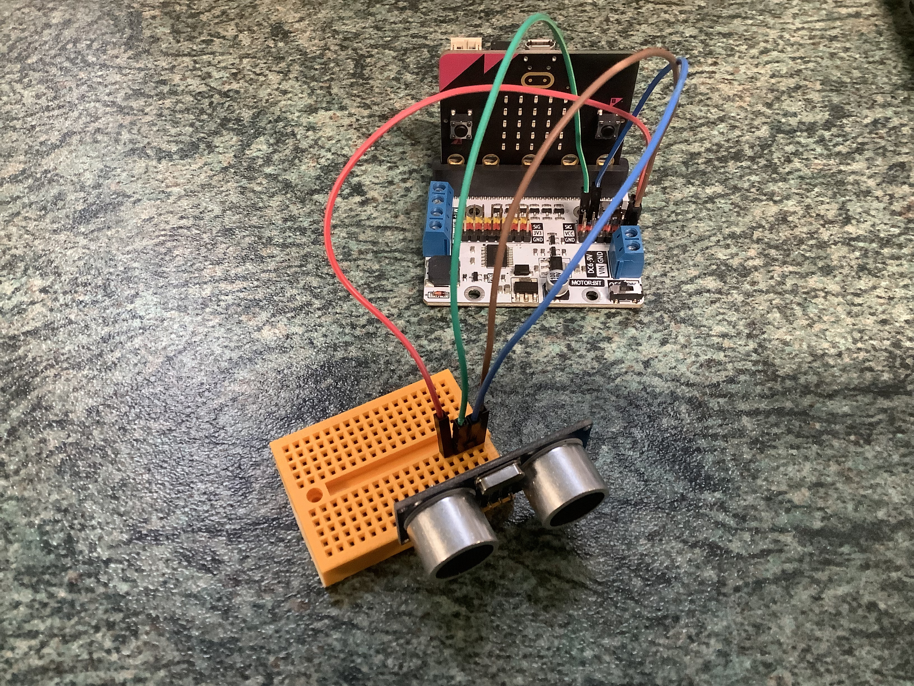
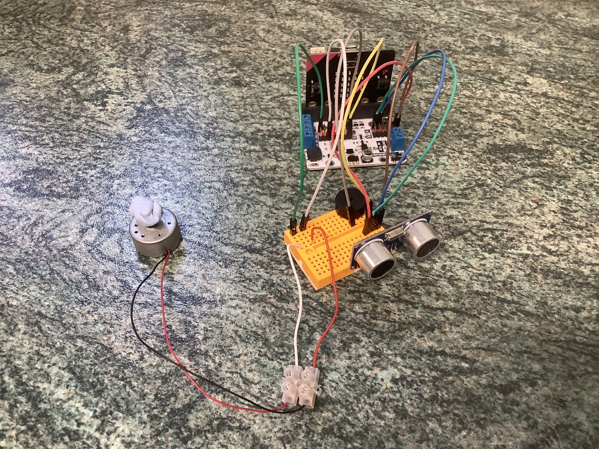
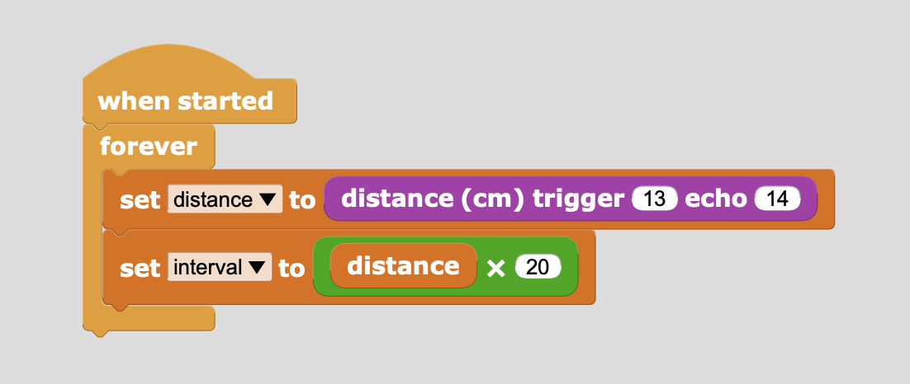
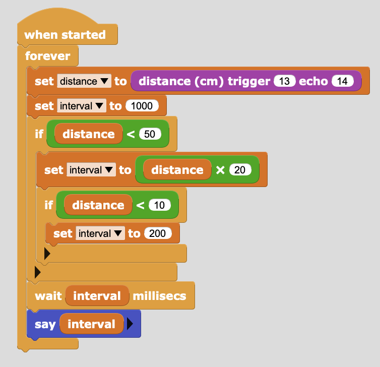

the design
Creating plans for the prototype.
Photo on Future electronics
To build the system is as simple as replicating the steps in Tinkercad.
First, attach the micro:bit to the breakout board.
Then, add a breadboard to the system and attach the ultrasonic distance sensor.
Next, add a piezoelectric buzzer to the system.
Lastly, add a very, VERY ad-hoc vibration motor made with a DC motor and blue-tac to the system.
Here, we will replicate the steps planned previously.
Create an infinite loop, bind the ultrasonic distance sensor to pins, and get a reading in centimeters every repitition.
Convert the sensor reading into a value used for timing.
Set a minimum & maximum value for the interval variable. A minimum value is needed to ensure there is an adequate delay between each repitition to prevent crashes; a maximum value is needed to ensure the repition will eventually occur, no matter how far away the sensor is from an obstacle.
Set the delay between each repitition as the interval variable.
Bind the vibrator to a pin (the buzzer is automatically bound to the system), add code to buzz or vibrate every repitition if obstacle is close enough, and add ability for user to turn buzzer and vibrator on and off.